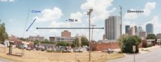
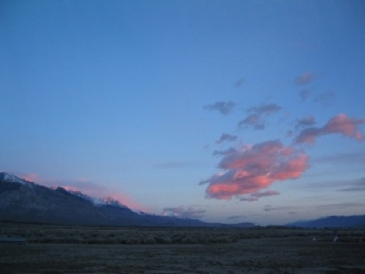
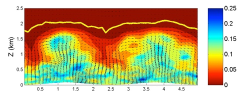
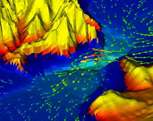
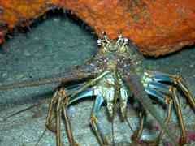

Urban Atmospheric Turbulence
[K. Lundquist, F.K. Chow]
Accurate simulations of atmospheric boundary layer flow are vital to predict dispersion of contaminant releases, particularly in densely populated urban regions where the consequences of forecast errors are potentially disastrous. Current mesoscale models do not account for urban effects, and conversely urban scale models do not account for mesoscale weather features. This project includes the development and implementation of an immersed boundary method (IBM) along with a surface roughness parameterization in the mesoscale Weather Research and Forecasting (WRF) model. IBM will be used to represent the complex boundary conditions imposed by urban landscapes. This work is part of the larger Urban WRF collaboration with LLNL which focuses on improving the ability of the WRF model to correctly forecast prognostic quantities in complex urban terrain.
Understanding the subsurface-land-atmosphere system in complex terrain through Large-Eddy Simulation, coupled hydrologic modeling, and field observations
[M.H. Daniels, F.K. Chow, R.M. Maxwell]

The land surface is the interface between earth and atmosphere, where topography, vegetation, and soil interact with water and air. Sensible and latent heat fluxes at the land surface provide a bottom boundary condition to the atmosphere and thereby affect flow in the atmospheric boundary layer, while evaporation, transpiration, precipitation, infiltration, and run-off combine to form an upper boundary condition for groundwater flows. An understanding of this complex system of interactions is integral in studying the atmospheric boundary layer and the hydrologic cycle. Most mesoscale atmospheric models rely on relatively coarse (12 km or greater) surface initialization data from widely available databases (e.g. North American Regional Reanalysis (NARR) or North American Mesoscale Model (NAM)). Such standard initialization procedures can be particularly problematic in complex terrain because resulting surface fluxes do not correspond to variations in local topography. Hydrologic models are one way to provide more accurate surface conditions to atmospheric models. PF.CLM is a physically-based massively parallel coupled hydrologic model composed of ParFlow, a groundwater model with integrated overland flow, coupled to a land surface model, the Common Land Model, (CLM). In this set of studies aimed at a better understanding of atmospheric boundary layer flow over complex terrain, PF.CLM is used to provide high resolution surface conditions, (mainly soil moisture and snow cover) to a mesoscale atmospheric model, the Advanced Regional Prediction System, (ARPS), used here in a one-way horizontal nested grid configuration, with the finest grid at 350 m resolution. Results of PF.CLM and ARPS simulations will be compared to observations from the Terrain-Induced Rotor Experiment, T-REX which took place in March and April of 2006 in Owens Valley, California, a region of complex, mountainous terrain.
Link: http://www.eol.ucar.edu/projects/TREX/
Turbulence Modeling for Atmospheric Boundary Layer Flow
[B. Zhou F.K. Chow]
This project performs Large-eddy simulations (LES) of the stably stratified atmospheric boundary layer over a flat terrain. Following a similar setup as the GABLS2 project, a moderately stable boundary layer is simulated through turbulence models using explicit filtering and reconstruction. We intend to capture the suppressed turbulence under stable conditions, and achieve better surface flux representation. Investigations are also carried out for subfilter scale dissipation and backscatter of LES models. The phenomenon of low level jet and elevated turbulence is also examined.
Isolating Effects of Water Table Dynamics, Terrain, and Soil Moisture Heterogeneity on the Atmospheric Boundary Layer Using Coupled Models
[J. Rihani, F.K. Chow, R. Maxwell]

We are using the unique research code, PF.ARPS, to study the specific effects of subsurface heterogeneity, water table depth, terrain and soil moisture heterogeneity on land surface fluxes and boundary layer development and depth on one hand, and the effects of boundary layer dynamics on water table fluctuations on the other hand. Understanding how these effects work in an idealized setting brings us a step closer to interpreting their role in driving boundary layer development in a real watershed. Preliminary results from the idealized simulations show that even including an offline (i.e. not coupled to the atmosphere) representation of water table dynamics through soil moisture initialization profiles at the land surface has a large effect on the simulated convective boundary layer. This holds potential for future applications where a fully coupled groundwater-atmosphere model may not be computationally feasible, but where an offline representation of water table dynamics might be used to provide more realistic initial conditions to an atmospheric model. The simulations also show that subsurface properties, such as hydraulic conductivity, can significantly affect soil moisture profiles at the land surface and hence boundary layer development. These preliminary results will be used to investigate these coupled effects in the Little Washita watershed in Oklahoma. Comparisons between the real case and the idealized simulations described earlier will be made. My goal is to explore statistical signals of the correlation between water table depth, land surface fluxes, and atmospheric boundary layer depth over periods of time longer than a diurnal cycle, as well as the circumstances and times of day that trigger the two-way feedback between the atmosphere and subsurface.

Modeling South San Francisco Bay Salt Pond Restoration
[C. Holleman, M. Stacey, O. Fringer]A significant portion of the salt ponds in South San Francisco Bay have been sold to the state in preparation for a large-scale restoration project. Between 50% and 90% of the ponds will be breached with the intention of allowing them to return to salt marsh. This represents a significant increase in the surface area of the southern portion of the bay and is sure to have impacts on water quality, tidal propagation and sediment dynamics.
As part of the efforts to return salt ponds in San Francisco Bay to their original salt marsh ecosystem we are developing a 3-D hydrodynamic model of the Bay. The model will simulate flows before and after various steps in the restoration and provide a way to assess the impacts of the restoration activities. Of particular interest are changes in salt intrusion in South Bay sloughs due to new or altered mixing processes and the fate of suspended sediments originating in the shoals.

Odorant Detection by Sensor Arrays
[R. Schuech, M. Stacey, M. Barad, M. Koehl]
The sense of smell is essential to many animals in the location of food and suitable habitats, identification of mates and predators, and communication with conspecifics. While many animals are adept at tracking odors to the source, how they do this is not well understood. The interaction between an organism olfactory organs and an odor plume is the animal first step in filtering information contained in its odor environment.
We focus on the olfactory antennules of marine crustaceans, using the mantis shrimp and spiny lobster as model organisms. The antennules bear arrays of chemosensory hairs, arranged in species-specific, often highly complex patterns. During a sniff, odor molecules are transported from the aquatic environment to individual sensory hairs, essentially transducing a spatial odorant map (the odor plume) into temporal signals (nerve impulses). This process determines what information is available to an animal trying to characterize and locate an odor source. Using a numerical modeling approach, we are investigating the signal filtering properties of these hairy noses by solving for the flow and scalar fields within biologically inspired sensor arrays.
Understanding the design principles of olfactory antennae will yield biological inspiration for the design of manmade chemical-sensing systems (e. g., artificial noses). Such sensors could be of great use in many environmental engineering applications, including risk assessment of water and air pollutant emissions, regulating releases of toxic substances, and finding sources of contaminants or unexploded ordnance.
Simulating Atmospheric Flow using WRF for Wind Energy Applications
[N. Marjanovic, F.K. Chow]
Forecasting available wind energy resources for heights relevant to tall turbines (80m-100m) is necessary in order to determine optimal locations for wind turbines. This project aims to investigate the limitations of current prediction and forecasting techniques and compare them on various time scales for extreme events while at the same time identifying opportunities for improvement. An appropriate forecasting tool needs to account for mesoscale processes, microscale effects of atmospheric stability, and surface-atmosphere interactions inducing local-scale circulations. Given this range of scales and processes, a mesoscale model is required that has large-eddy simulation (LES) capabilities which also take into account varying atmospheric stability. Numerical weather prediction models, such as the Weather and Research Forecasting model (WRF) will be utilized at grid spacings of less than 1 km, which will present problems that need to be addressed due to the limits of WRF's subfilter scale (SFS) turbulence parameterizations. Innovative forecasting techniques that incorporate atmosphere-surface-subsurface interaction will be demonstrated through collaboration with LLNL and the Colorado School of Mines to comprehend the impact of tall turbines on downwind soil moisture and the impact of soil moisture and subsurface hydrology on winds overhead. This evaluation will provide needed edification on the applicability of extending these research approaches to operational practices such as integration of large fractions of wind power into power grids, scheduling maintenance on wind energy facilities, and defining design criteria for next-generation turbines.